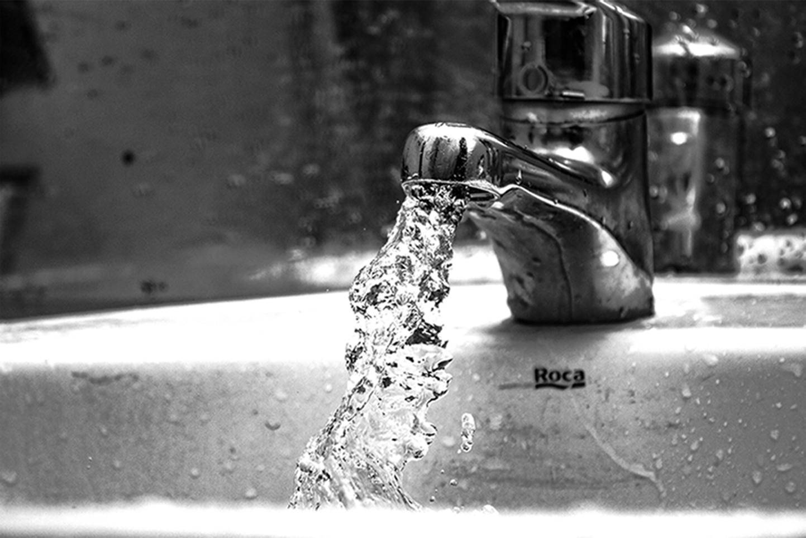

1 [! DOCTYPE RECORD]
2 [title] Thought in water [/title]
1 [! DOCTYPE RECORD]
2 [title] Thought in water [/title]
3 [2021. 11. 23 화][오전 08:48] 4 곧 수업 시작하니까 빨리 씻고 가야지~
5 [2021. 11. 24 수 ][오후 01:36] 6 너무 피곤하다. 알바가기 전에 잠시만 누워서 쉬어야겠어..
7 [2021. 11. 24 수 ][오후 08:14] 8 급하다 급해! 빨리 과제 제출해야되는데..
9 [2021. 11. 25 목 ][오후 03:08] 10 하.. 이렇게 졸릴 수가.. 잠이 깨질 않네.
11 [2021. 11. 25 목 ][오후 09:10] 12 아 따뜻하다.. 집가서 따뜻한 물로 씻고 싶다..
13 [2021. 11. 26 금 ][오후 07:00] 14 회의 언제 끝나려나? 아 배고파 치킨 먹고 싶다.
15 [2021. 11. 26 금] [오후 10:32] 16 차별화 된 어플리케이션 도대체 뭐가 좋을까? 17 하 너무 어렵다..
18 [2021. 11. 27 토] [오후 02:26] 19 아 맞다. 나가서 엄마한테 전화해야겠다.
20 [2021. 11. 28 일] [오후 11:18] 21 조금만 잘까.. 너무 피곤한데..
22 [2021. 12. 3 금] [오후 07:02] 23 아 파마하고 싶당~ 히피펌 어울리려나?
24 [2021. 12. 6 월] [오전 10:41] 25 앗 따가워 언제 베였지?
/* 여러분은 손 씻는 그 20-30초 동안 어떤 생각을 하시나요? */